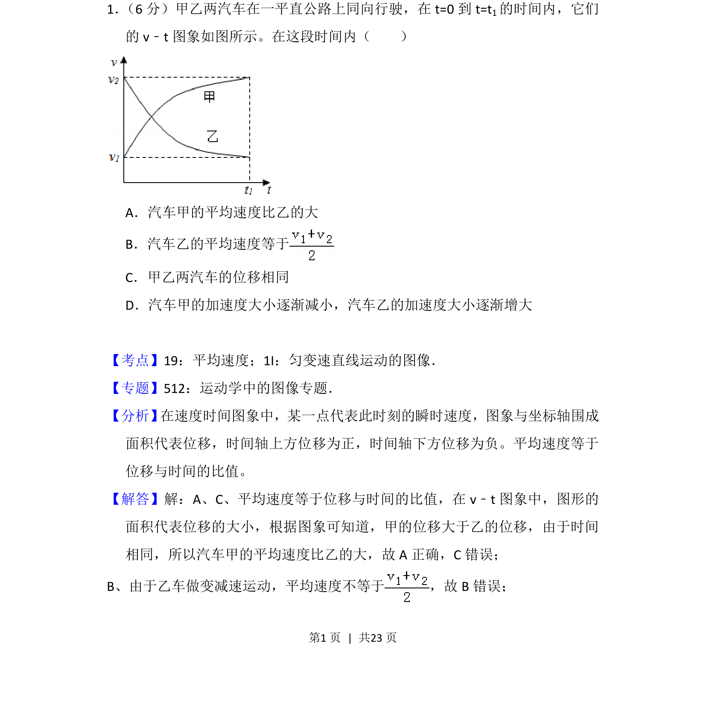
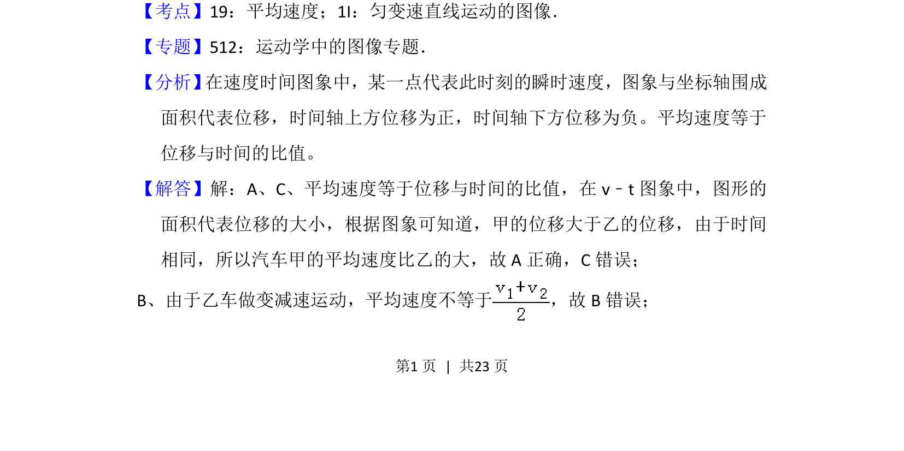
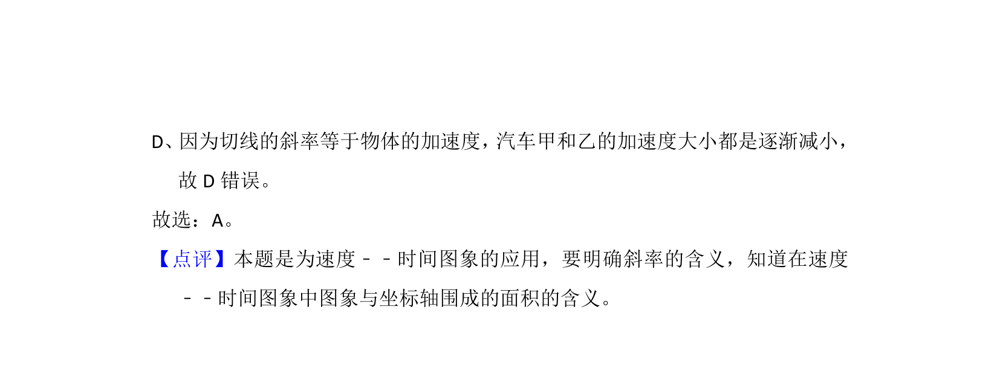

考点：平均速度 v-t图像 位移 加速度

本题通过v-t图像分析两车的平均速度、位移和加速度变化规律。


📄 原 PDF 第 1 页：
素材/真题/吉林/2008-2024·（吉林）物理高考真题/2014年高考物理试卷（新课标Ⅱ）（解析卷）.pdf
1． （6分）甲乙两汽车在一平直公路上同向行驶，在t=0到t=t1的时间内，它们 的v﹣t图象如图所示。在这段时间内（ ） A．汽车甲的平均速度比乙的大 B．汽车乙的平均速度等于 C．甲乙两汽车的位移相同 D．汽车甲的加速度大小逐渐减小，汽车乙的加速度大小逐渐增大
【考点】19：平均速度；1I：匀变速直线运动的图像．菁优网版权所有 【专题】512：运动学中的图像专题． 【分析】 在速度时间图象中，某一点代表此时刻的瞬时速度，图象与坐标轴围成 面积代表位移，时间轴上方位移为正，时间轴下方位移为负。平均速度等于 位移与时间的比值。 【解答】解：A、C、平均速度等于位移与时间的比值，在v﹣t图象中，图形的 面积代表位移的大小，根据图象可知道，甲的位移大于乙的位移，由于时间 相同，所以汽车甲的平均速度比乙的大，故A正确，C错误； B、由于乙车做变减速运动，平均速度不等于 ，故B错误；